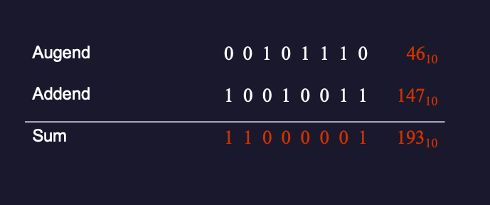
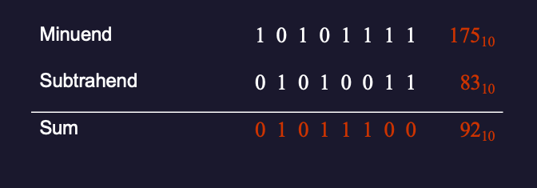
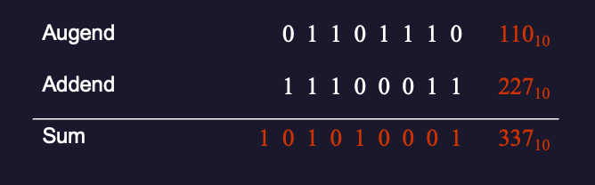
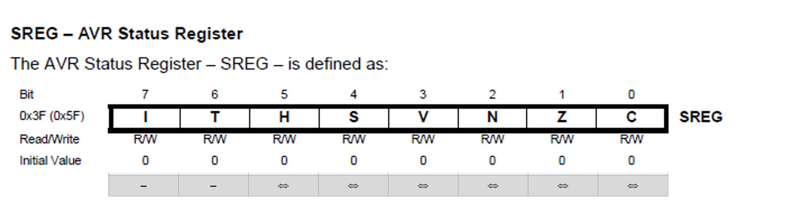

Introduction to Data Representation
Welsh Centre for Printing and Coatings
Tuesday October 1, 2024
Introduction
Topics Covered in this Lecture

Data Representations
How is Data stored Digitally?
Modern digital processors and microcontrollers contain millions of solid state devices known as transistors (Figure 1).

Figure 1: A single transistor
By arranging six of these transistors appropriately we can create a memory device that can store one bit of data (Figure 2).
Terminology
1 bit = 1 data unit
1 nybble = 4 data units (4 bits)
1 byte = 8 data units (8 bits, 2 nybbles)
1 word = 16 data units (16 bits, 2 bytes, 4 nybbles)
Numbering Systems and Base Conversion
Decimal Number Representation
Take the decimal number (Base 10) 4623, what does this representation mean?
\[4623\]
\[4000 + 600 + 20 + 3\]
\[(4\times 1000) + (6\times 100) + (2\times 10) + (3\times 1)\]
\[\left(4\times 10^3\right) + \left(6\times 10^2\right) + \left(2\times 10^1\right) + \left(3\times 10^0\right)\]
We can break down any base 10 (decimal) number \(N\) in the same way using the expression:
\[N_{10} = \cdots + \left(X\times 10^3\right) + \left(X\times 10^2\right) + \left(X\times 10^1\right) + \left(X\times 10^0\right)\]
where \(X\) is any digit in the set \(\{0, 1, 2, 3, 4, 5, 6, 7, 8, 9\}\).
What About Other Bases?
We can apply the same techniques to any other base to convert the value into decimal (base 10).
For programming (and digital systems more generally), the binary (base 2), octal (base 8) and hexadecimal (base 16) representations are commonly used2
Binary (base 2)
\[N_2 = \cdots + \left(X\times 2^5\right) + \left(X\times 2^4\right) + \left(X\times 2^3\right) + \left(X\times 2^2\right) + \left(X\times 2^1\right) + \left(X\times 2^0\right)\]
where \(X\) is any digit in the set \(\{0, 1\}\).
Example 1
Consider the binary representation \(N_2 = 10010011\). What is the value of \(N_2\) in decimal base 10?
Solution
\[N_{10} = \left(1\times 2^7\right) + \left(0\times 2^6\right) + \left(0\times 2^5\right) + \left(1\times 2^4\right) + \left(0\times 2^3\right) + \left(0\times 2^2\right) + \left(1\times 2^1\right) + \left(1\times 2^0\right)\]
\[N_{10} = \left(1\times 128\right) + \left(0\times 64\right) + \left(0\times 32\right) + \left(1\times 16\right) + \left(0\times 8\right) + \left(0\times 4\right) + \left(1\times 2\right) + \left(1\times 1\right)\]
\[N_{10} = 128 + 16 + 2 + 1\]
\[N_{10} = 147_{10}\]
Octal (base 8)
Octal:
\[N_{8} = \cdots + \left(X\times 8^5\right) + \left(X\times 8^4\right) + \left(X\times 8^3\right) + \left(X\times 8^2\right) + \left(X\times 8^1\right) + \left(X\times 8^0\right)\]
where \(X\) is any digit in the set \(\{0, 1, 2, 3, 4, 5, 6, 7\}\).
Example 2
Consider the octal representation \(N_8 = 712\). What is the value of \(N_8\) in decimal base 10?
Solution
\[N_8 = 713\]
\[N_{10} = \left(7\times 8^2\right) + \left(1·8^1\right) + \left(2·8^0\right)\]
\[N_{10} = (7\times 64) + (1\times 8) + (2\times 1)\]
\[N_{10} = 448 + 8 + 2\]
\[N_{10} = 458_{10}\]
Hexadecimal (base 16)
\[N_{16} = \cdots + \left(X\times 16^5\right) + \left(X\times 16^4\right) + \left(X\times 16^3\right) + \left(X\times 16^2\right) + \left(X\times 16^1\right) + \left(X\times 16^0\right)\]
where \(X\) is any digit in the set \(\{0, 1, 2, 3, 4, 5, 6, 7, 8, 9, \textrm{A}, \textrm{B}, \textrm{C}, \textrm{D}, \textrm{E}, \textrm{F}\}\)3.
Example 3
Consider the hexadecimal representation \(N_{16} = 3\textrm{C}4\). What is the value of \(N_{16}\) in decimal base 10?
Solution
\[N_{16} = \left(3\times 16^2\right) + \left(\textrm{C}\times 16^1\right) + \left(4\times 16^0\right)\]
\[N_{10} = 3\times 256 + 12\times 16 + 4\times 1\]
\[N_{10} = 768 + 192 + 4\]
\[N_{10} = 964_{10}\]
Decimal Number Conversion
A decimal number can be converted into any other base using the divide-by-\(n\) method where \(n\) represents the desired base.
Figure 3: a step in the division-by-\(n\) method of decimal number conversion.
Step 1 (see Figure 3) − Divide the decimal number by the value of the new base and get the quotient and a remainder.
Step 2 − Keep dividing the quotient of the previous divide by the new base and record the remainder
Step 3 − Repeat Step 2, until the quotient becomes zero
Step 4 – Read the remainders from bottom (MSB) to top (LSB).
Example 4
Convert \(28_{10}\) into binary (base 2).
Solution
Step 1: \(28 \div 2 = 14\) remainder \(0\)
Step 2: \(14 \div 2 = 7\) remainder \(0\)
Step 3: \(7 \div 2 = 3\) remainder \(1\)
Step 4: \(3 \div 2 = 1\) remainder \(1\)
Step 5: \(1 \div 2 = 0\) remainder \(1\)
Binary value: \(28_{10} = 11100_{2}\).
Confirmation
\[\begin{align} 11000_2 &= \left(1\times 2^4\right) + \left(1\times 2^3\right) + \left(1\times 2^2\right) + \left(0\times 2^1\right) + \left(0\times 2^0\right)\\ &= \left(1\times 16\right) + \left(1\times 8\right) + \left(1\times 4\right) + \left(0\times 2\right) + \left(0\times 1\right)\\ &= 16 + 8 + 4\\ &= 28_{10} \end{align}\]
Example 5
Convert \(28_{10}\) into octal (base 8).
Solution
Step 1: \(28 \div 8 = 3\) remainder \(4\)
Step 2: \(3 \div 8 = 0\) remainder \(3\)
Octal value: \(28_{10} = 34_{8}\).
Confirmation
\[\begin{align} 34_8 &= \left(3\times 8^1\right) + \left(4\times 8^0\right)\\ &= \left(3\times 8\right) + \left(4\times 1\right) \\ &= 24 + 4\\ &= 28_{10} \end{align}\]
Example 6
Convert \(28_{10}\) into hexadecimal (base 16).
Solution
Step 1: \(28 \div 16 = 1\) remainder \(12\,\left(\textrm{C}_{16}\right)\)
Step 2: \(1 \div 16 = 0\) remainder \(1\)
Hexadecimal value: \(28_{10} = 1\textrm{C}_{16}\).
Confirmation
\[\begin{align} 1\textrm{C}_{16} &= \left(1\times 16^1\right) + \left(\textrm{C}\times 16^0\right)\\ &= \left(1\times 16\right) + \left(12\times 1\right) \\ &= 16 + 12\\ &= 28_{10} \end{align}\]
Tricks and Tips
All numbers are stored in a computer in binary form. Depending on the encoding, each digit takes up 1 bit (binary), 3 bits (octal) or 4 bits (decimal and hexadecimal).
If the digit needs less bits than allowed for its representation, the remaining bits the the left of the number will be set to zero.
For example:
- \(1_2\) is represented as
0b000000014 (binary, prefix0b, seven padding 0 bits + 1 bit for the value 1). - \(5_8\) is
0005(octal prefix0followed two 0 digits (2 bits plus 3 bits) (00 000 101). - \(10_{10} = 8 + 2\) is
0b00010010. - \(\textrm{E}\) is
0x0E(hexadecimal prefix0xfollowed by0b0000, and0b1110=0b00001110).
For octal and hexadecimal values, the equivalent binary number is easily obtained by grouping from the right.
- For octal, the largest digit is 7 which needs three bits. So the octal representation of an 8 bit binary number will have 2 bits (0-3) + two groups of 3 bits. The maximum number allowed is
0b11 111 111=0377= \(255_{10}\). - For hexadecimal, four bits are needed to represent all values in the range 0-F. So an 8 bit value can only represent two hexadecimal digits
0x00to0xFF.
Example 7
Convert the binary number 0x000011101 to octal and hexadecimal. Give the value in decimal.
Solution
Grouping 0x000011101 by threes gives 00 + 011 + 101 = 0035 = \(35_8\).
Grouping 0x000011101 by fours gives 0001 + 1101 = 0x01D = \(1\textrm{D}_{16}\).
Taking the octal value \(62_8 = \left(0\times 8^2\right) + \left(3\times 8^1\right) + (5\times 8^0) = 0 + 24 + 5 = 29_{10}\).
Example 8
Convert the octal number \(62_8\) (0062) to binary and hexadecimal. Give the value in decimal.
Solution
The octal digits \(6_8\) and \(2_8\) are the three-bit binary values 0b110 and 0b010 respectively. So the equivalent 8-bit binary byte is obtained by combining these binary values and prepending with two zeros: 0b00 110 010 \(\to\) 0b00110010.
Grouping the binary number 0b00110010 in blocks of 4 gives 0b 0011 0010 which gives the hexdecimal digits \(3_{16}\) and \(2_{16}\) respectively. So \(62_8 = 32_{16}\).
The equivalent decimal number is \(\left(3\times 16^1\right) + \left(2\times 16^0\right) = 48 + 2 = 50_{10}\).5
Summary of number systems
| Decimal (Code) | Binary (Code) | Octal (Code) | Hexadecimal (Code) |
|---|---|---|---|
\(0\) (0) |
\(0\) (0b00000000) |
\(0\) (000) |
\(0\) (0x00) |
\(1\) (1) |
\(1\) (0b00000001) |
\(1\) (001) |
\(1\) (0x01) |
\(2\) (2) |
\(10\) (0b00000010) |
\(2\) (002) |
\(2\) (0x02) |
\(3\) (3) |
\(11\) (0b00000011) |
\(3\) (003) |
\(3\) (0x03) |
\(4\) (4) |
\(100\) (0b00000100) |
\(4\) (004) |
\(4\) (0x04) |
\(5\) (5) |
\(101\) (0b00000101) |
\(5\) (005) |
\(5\) (0x05) |
\(6\) (6) |
\(110\) (0b00000110) |
\(6\) (006) |
\(6\) (0x06) |
\(7\) (7) |
\(111\) (0b00000111) |
\(7\) (007) |
\(7\) (0x07) |
\(8\) (8) |
\(1000\) (0b00001000) |
\(10\) (010) |
\(8\) (0x08) |
\(9\) (9) |
\(1001\) (0b00001001) |
\(11\) (011) |
\(9\) (0x09) |
\(10\) (10) |
\(1010\) (0b00010010) |
\(12\) (012) |
\(\mathrm{A}\) (0x0A) |
\(11\) (11) |
\(1011\) (0b00001011) |
\(13\) (013) |
\(\mathrm{B}\) (0x0B) |
\(12\) (12) |
\(1100\) (0b00001100) |
\(14\) (014) |
\(\mathrm{C}\) (0x0C) |
\(13\) (13) |
\(1101\) (0b00001101) |
\(15\) (015) |
\(\mathrm{D}\) (0x0D) |
\(14\) (14) |
\(1110\) (0b00001110) |
\(16\) (016) |
\(\mathrm{E}\) (0x0E) |
\(15\) (15) |
\(1111\) (0b00001111) |
\(17\) (017) |
\(\mathrm{F}\) (0x0F) |
\(16\) (16) |
\(10000\) (0b0010000) |
\(20\) (020) |
\(10\) (0x10) |
Other binary encodings
Numbers are not the only type of data that can be encoded using binary values. In fact, all data that is manipulated by computers is represented by an encoding of binary numbers.
Some examples of codings that you will see are:
- Characters which are represented as ASCII code (7 bits), extended ASCII (8 bits) or UTF (1-4 bytes) used to represent other characters (e.g. for accented characters, other alphabets and languages, math symbols, emojis) and other purposes.
- Other numerical encodings, such as Binary Coded Decimal (BCD)
- Machine codes, which is how computers represent exercutable programmes, are also represented in binary numbers. These are usually generated by an assembler, compiler, or interpreter from human-readable code that is stored in text files that are themselves use characters encoded in ASCII or UTF.
Additional self-directed learning materials which explore some of these extra encodings are provided on Canvas.
We will dicuss some of the encodings used for machine code in later lectures.
Binary Addition and Subtraction
How do computers add and subtract numbers?
Binary Arithmetic
Microcontrollers work with 0’s and 1’s (binary).
In order to add or subtract two binary numbers there are a series of rules similar to in decimal arithmetic.
Rules for Binary Addition
\[\begin{align*} 0 + 0 &= 0\\ 0 + 1 &= 1\\ 1 + 0 &= 1\\ 1 + 1 &= 10\quad\textrm{i.e.}\, 0 + \textrm{carry}\, 1 \end{align*}\]
Example 10
Confirm using binary addition that \(14_{10} + 19_{10} = 33_{10}\).
Solution (Figure 4)
Figure 4: Example 10: \(14_{10} + 19_{10} = 33_{10}\)
Example 11
Confirm using binary addition that \(46_{10} + 147_{10} = 193_{10}\).
Solution (Figure 5)
Figure 5: Example 11: \(46_{10} + 147_{10} = 193_{10}\)
Rules for Binary Subtraction
\[\begin{align*} 0 - 0 &= 0\\ 1 - 0 &= 1\\ 1 - 1 &= 0\\ 0 - 1 &= 10 - 1 +\,\textrm{borrow} = 1+ \textrm{borrow} \end{align*}\]
Example 12
Confirm using binary subtraction that \(27_{10} - 14_{10} = 13_{10}\).
Solution (Figure 6)
Figure 6: Example of binary subtraction: \(27_{10} - 14_{10} = 13_{10}\)
Example 13
Show using binary subtraction that \(175_{10} - 83_{10} = 92_{10}\).
Solution (Figure 7)
Figure 7: Example of binary subtraction: \(175_{10} - 83_{10} = 92_{10}\)
Binary Arithmetic and Flags
What happens when the result is larger than 8-bits?
Extended Rules for Binary Addition
We need to extend the rules of binary addition to introduce an overflow that is indicated by a carry flag.
\[\begin{align*} 0 + 0 &= 0 \\ 0 + 1 &= 1 \\ 1 + 0 &= 1 \\ 1 + 1 &= 10\quad \textrm{i.e.}\, 0 + \textrm{carry}\, 1 \\ 1 + 1 + 1 &= 11\quad \textrm{i.e.}\, 1 + \textrm{carry}\, 1 \end{align*}\]
Example 14
Show using binary addition that \(110_{10} + 227_{10} = 337_{10}\).
Solution (Figure 8)
Figure 8: Example of binary subtraction with overflow: \(110_{10} + 227_{10} = 337_{10}\)
Introduction to the Status Register
The microcontroller has an 8-bit register containing a number of flags which can be set based on the condition of the microcontroller.
The status register for the Atmel ATMega328/P is illustrated in Figure 9.
Figure 9: The Status Register of the Atmel ATMega328/P
Status register flags associated with binary addition and subtraction
- The Half Carry Flag
His set (to 1) if there was a carry from bit 3; it is cleared (set to 0) otherwise. - The Zero Flag
Zis set if the result is0x00000000; cleared otherwise. - The Carry Flag
Cis set if there was a carry from the most significant bit (MSB)6 of the result; cleared otherwise.
We will look at the status register in detail in Architecture of the Atmel ATmega 328 Microcontroller.
Binary Arithmetic Example 14
Figure 10 shows the condition of the status register after completing the addition from Example 14.
Figure 10: The condition of the status register after completing the sum \(110_{10} + 227_{10} = 337\).
Other Data Representations
We have provided notes and videos that introduce other commonly used data representations in Appendix A: Other Data Representations.
Important
This chapter and Appendix A are examinable and you should study both as part of your preparation for the class test.
Next
In the next lecture we will look at the Architecture of the Atmel ATmega 328 Microcontroller.
Footnotes
Source of image used in Figure 2: SRAM vs DRAM : How SRAM Works? How DRAM Works? Why SRAM is faster than RAM?, All About Electronics - YouTube.
Note that octal and hexadecimal are related to binary as in each case the base is a power of 2. In the case of octal \(8 = 2^3\) and hexadecimal \(16 = 2^4\).
Note we have to introduce the letters A-F to represent the two-digit decinal numbers 10-15. Thus \(\textrm{A}_{16} = 10_{10}\), \(\textrm{B}_{16} = 11_{10}\), \(\textrm{C}_{16} = 12_{10}\), \(\textrm{D}_{16} = 13_{10}\), \(\textrm{E}_{16} = 14_{10}\), \(\textrm{F}_{16} = 15_{10}\),
The prefix
0bis used in C code and many other languages as the prefix for the text representation of a binary value.0is used for octal values and0xfor hexadecimal values. If there is no leading zero, the number is assumed to be decimal. However a number is defined in program code, the actual value stored in memory to represent that number will be a binary number.The calculator app on both Windows and MacOS have a programmer view that makes it easy to confirm these results.
The most significant bit is the left most bit. It corresponds to the numerical value \(2^7 = 128\). For certain operations, it may also indicate a negative number.